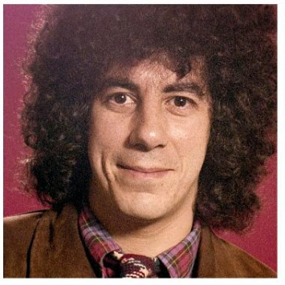
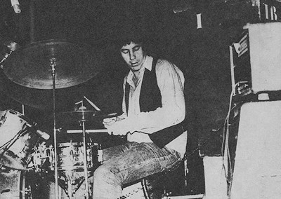

¡LES GANÉ A TODOS CON UNA MANO Y UN BOMBO!

Nadie lo vio venir: Oscar Moro, baterista de mil batallas, se corona Campeón Mundial de Golpes por Segundo en el certamen clandestino de percusión extrema disputado en Uzbekistán. Vistiendo solo una musculosa de Serú Girán y dos baquetas hechas de hueso de ñandú, derrotó a 43 bateristas de todo el mundo mientras sonaba “Cinema Verité” de fondo.
LO SORPRENDENTE
Al alzar el trofeo (una escultura de platillos rotos y lágrimas de Keith Moon), gritó: “¡NO NECESITO REDOBLANTE, CON EL ALMA ME ALCANZA!” Argentina celebra. El rock se arrodilla. Y la ONU exige explicaciones.
